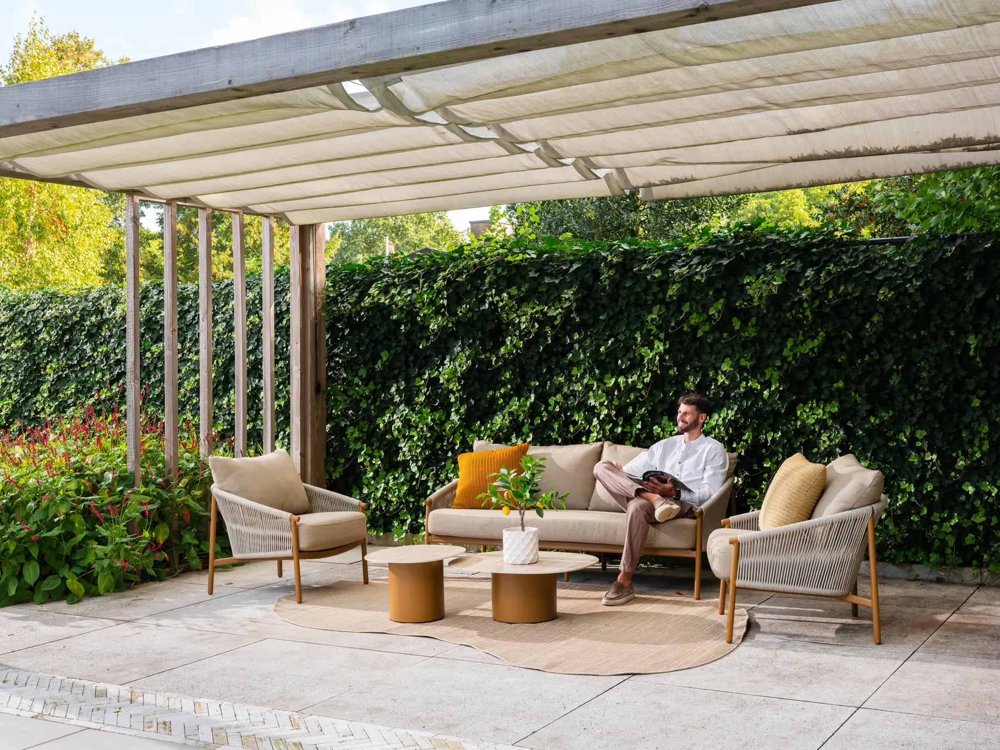
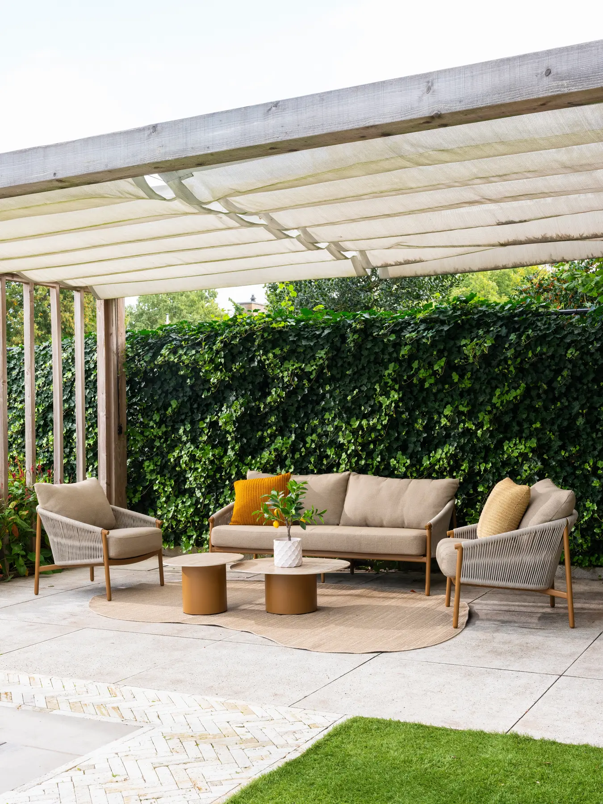
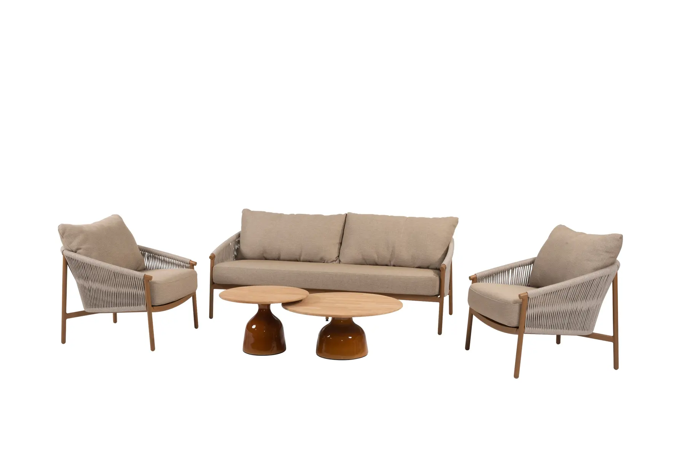
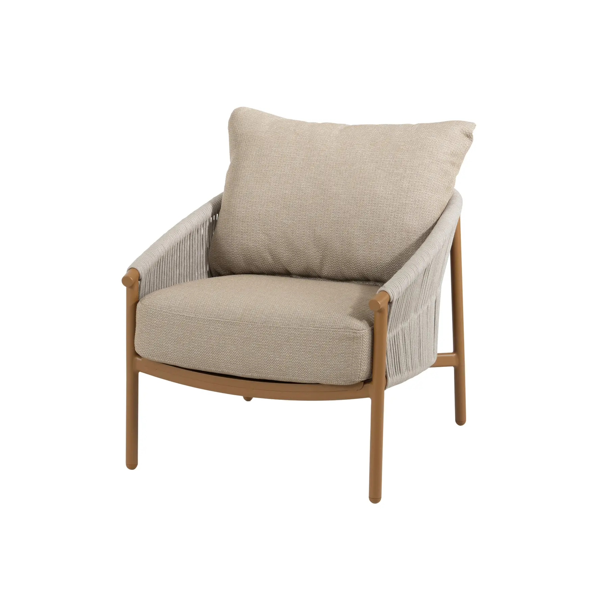
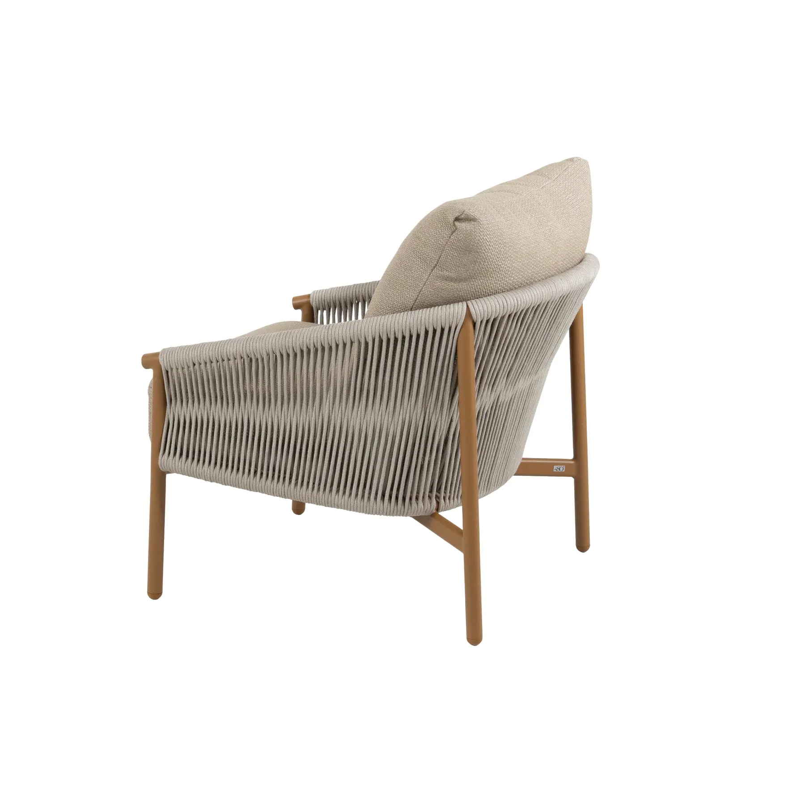
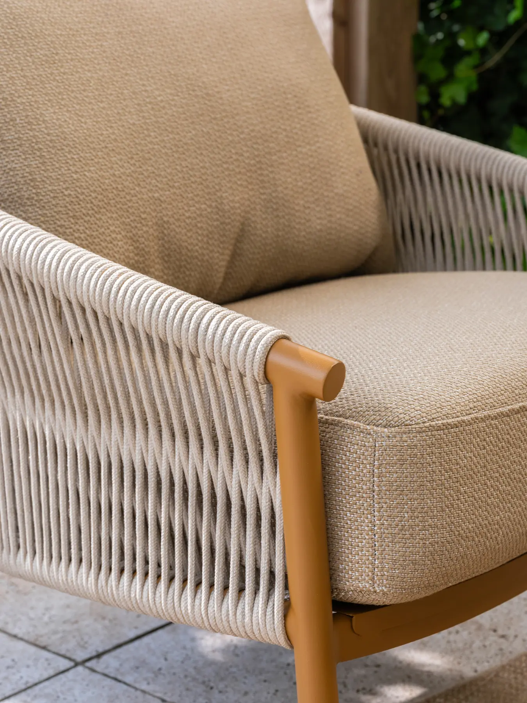
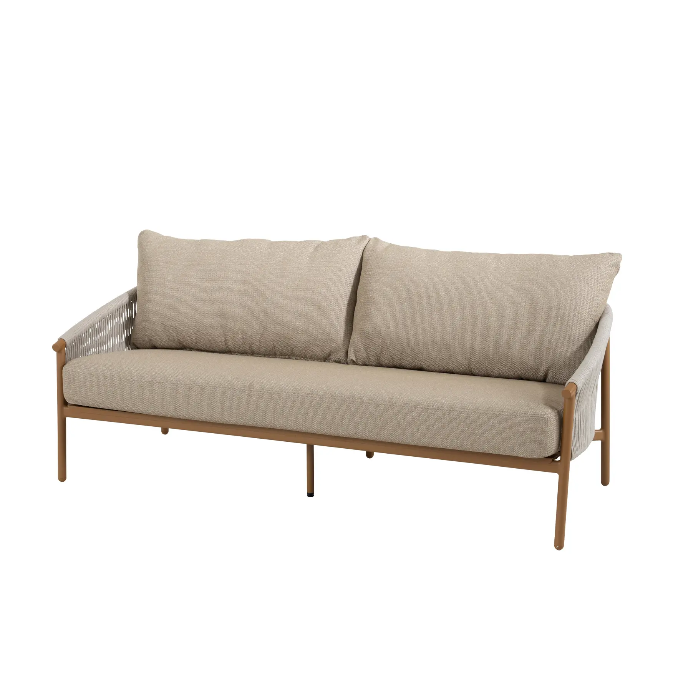
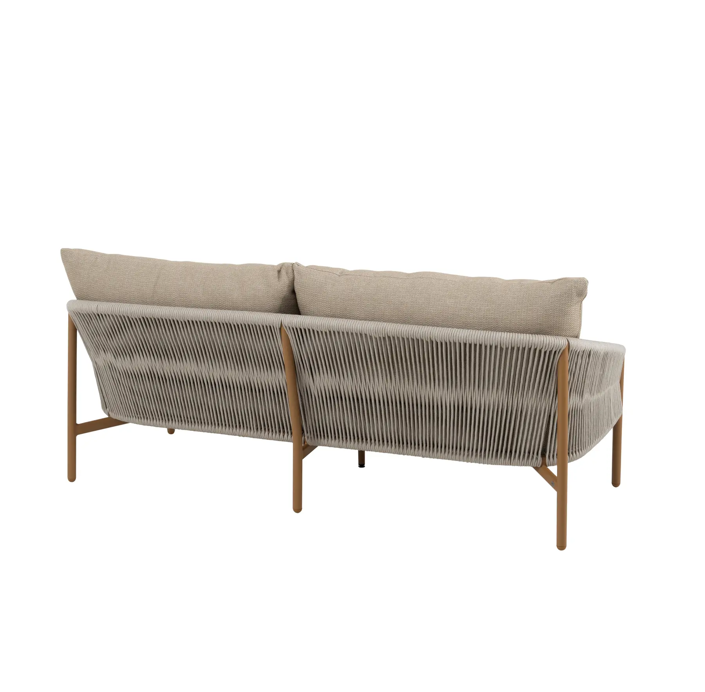

Канатне плетення поверх фарбованого алюмінію та знімні чохли з вологостійкої тканини. Виробник дає на конструкцію п’ять років гарантії.
Milos — лаунж-колекція нідерландського виробника 4 Seasons Outdoor. У її основі один принцип каркаса: фарбований алюміній, обгорнутий канатним плетенням, і знімні подушки поверх нього.
У колекції є тримісний диван, окремі лаунж-крісла та лава — елементи розраховані на те, щоб їх комбінувати. Невеликий балкон можна облаштувати парою крісел і приставним столиком, а простору терасу — повноцінною зоною відпочинку з диваном і журнальними столиками, як на фото вище.
Плетіння виконане з вуличної мотузки (rope) — товстішої й щільнішої за класичний ротанг. Вона тримає форму спинки та підлокітників, пропускає повітря і не нагрівається так сильно, як суцільний пластик чи метал.
Розміри нижче стосуються показаної на фото конфігурації — тримісного дивана та пари лаунж-крісел у кольорі Amber. Виробник пропонує й окрему лаву, тож збірку можна змінити під конкретну терасу.
| Диван тримісний | 189 × 80 × 68 см (Д × Ш × В), висота сидіння 45 см |
|---|---|
| Лаунж-крісло | 80 × 73 × 68 см (Д × Ш × В), 2 шт у показаному комплекті |
| Каркас | Алюміній із порошковим фарбуванням, колір Amber, стійкий до корозії |
| Плетіння | Вулична мотузка (rope), суцільне обгортання каркаса |
| Подушки | Знімні чохли, олефінова тканина, наповнювач — вулична піна |
| Гарантія виробника | 5 років на каркас |
Олефінова тканина швидко сохне після дощу і не вигорає на сонці. Чохли знімні: їх можна прати окремо при температурі до 30°C, без відбілювача та агресивних засобів. Сушать при низькій температурі або залишають сохнути природним чином; за потреби прасують на мінімальному режимі.
Тканина не розрахована на постійний контакт із пташиним послідом, опалим листям чи хлорованою водою з басейну — ці забруднення варто прибирати одразу. На зиму або під час тривалої негоди подушки краще заносити в приміщення чи накривати захисним чохлом.







Кольори, терміни поставки й вартість під конкретну конфігурацію уточнюємо індивідуально. Залиште номер у формі, зателефонуйте або напишіть одразу в Telegram.
Форма заявки — вище. Або оберіть зручний спосіб: